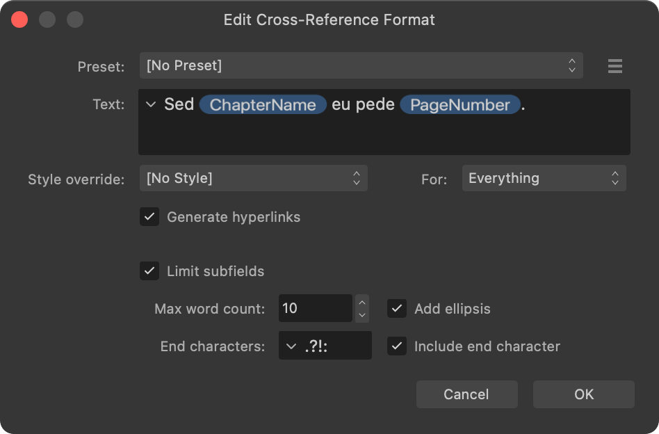

A cross-reference refers the reader from one place in a publication's text to another place, such as a chapter, a note or a figure. For example, "For more information, see Spring-Flowering Shrubs on page 32."
A cross-reference that displays the numbered list item (A) and page number (B) of its target.
Cross-references are inserted into document text and managed using the Cross-References panel.
Each cross-reference in document text is a field, which allows its value to be easily updated as your publication's content changes.
Inserting cross-references
When you insert a cross-reference, the Insert Cross-Reference dialog is shown.
The Insert Cross-Reference dialog.
On the dialog:
Set (or 'link to') a target, which can be an existing anchor, paragraph or index mark.
Set the text to be displayed in your document, including subfields that describe the target or its position.
Select a character style to apply to the cross-reference's text, overriding the formatting at its position in document text.
Topics linked below explain how to set a cross-reference's target, text and formatting.
Editing existing cross-references
The options shown when editing cross-references differ depending on how many are selected on the Cross-References panel.
When one cross-reference is selected, you can edit any of its settings, i.e. the full range of target, text and formatting options that were available when inserting the cross-reference.
When multiple cross-references are selected, you can edit their text and formatting but not their targets. This allows you to easily ensure multiple cross-references have the same phrasing and appearance.

Editing multiple cross-references.To insert a cross-reference:
Create an insertion point in text.
Do one of the following:
On the Cross-References panel, select Insert Cross-Reference.
-click the text and select Insert Cross-Reference.
On the dialog that appears:
Select the required target's type from the Link to pop-up menu.
(Optional) Use the filter options to limit what is shown in the targets list.
Select the required target from the targets list.
Set the Text to display in document text.
(Optional) Select a character style and the parts of the cross-reference's text to apply it to, from the Style override and For pop-up menus, respectively
Select OK.
Options for setting a cross-reference's text and formatting are explained in topics linked below.
To edit an existing cross-reference:
On the Cross-References panel:
Select one or more cross-references.
Select Edit Cross-Reference.
On the dialog that appears, set the target, text and formatting options as required.
Select OK.
To convert cross-references to regular text:
In document text, -click a cross-reference's text and select Expand Field.
The cross-reference is removed from the Cross-References panel. Its value remains in the document as regular text and can be edited directly.
A cross-reference is automatically converted to regular text when deleted via the Cross-References panel.
To navigate to a cross-reference's target:
On the Cross-References panel:
Select the cross-reference.
Select Go to Target.
An insertion point is created at the target's position.
To navigate to a cross-reference's field in document text:
On the Cross-References panel:
Select the cross-reference's entry.
Select Go to Cross-Reference.
The document view jumps to the cross-reference's field. The field is selected.
To remove cross-references:
On the Cross-References panel:
Select the unwanted cross-references. (-click to select more than one.)
Select Remove Cross-References.
Select Yes to convert the cross-reference's field to regular text.
(Optional) To remove the resulting text from your document, do one of the following:
If you selected one cross-reference, or if you selected multiple cross-references and their fields were in the same text object (including a sequence of linked text frames), the resulting text is automatically selected. Press the to remove it.
If you selected multiple cross-references and their fields were in different text objects (excluding a sequence of linked text frames), you will need to inspect your document text and manually remove any unwanted text.
Alternatively, to remove a single cross-reference, -click its field in document text and then select Cut to remove it from document text and the Cross-References panel.